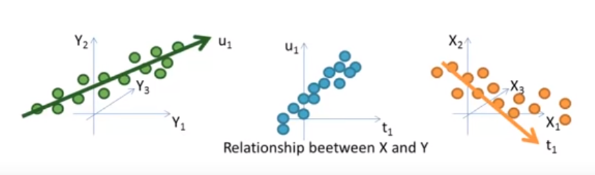

Partial Least Squares
As mentioned in our notebook on Principal Component Analysis, the chief goal of a dimension reduction technique is to express the observations of our p-dimensional dataset, X as a linear combination of m-dimensional vectors (m < p), Z, using a mapping optimized “to explain the most variation in our data.”
But whereas PCA is an unsupervised method that involves figuring out how to explain variation in X, the Partial Least Squares method introduces a supervised alternative and considers our target, Y, in the dimension reduction.
Or to quote ISL:
Roughly speaking, the PLS approach attempts to find directions that help explain both the response and the predictors.
Intuition
Recall that the general idea of PCA is to:
- Find an axis that explains the most variation in
X - Re-orient our data relative to this new axis
- Repeat until we reach some desired “explained variation” threshold
PLS follows a similar approach, but instead begins with basically a Least Squares regression on Y
After we normalize our data, the algorithm can be described as thefollowing (borrowed from this Stanford lecture):
from IPython.display import Image
Image('images/pls_alg.PNG')
Decrypting this a bit, we start by taking a linear regression on y to get our coefficients theta_j1.
We use this to transform X_j into y_hat = Z_1– our prediction vector– by taking a linear combination. As with any regression, we expect to see a bunch of residual prediction errors between y_hat and y.
Flipping this, X_j^(2) will represent the “missing information” that we have for trying to predict our original X_j values using our new mapping Z_1.
At this point, we want to continue in the PCA fashion of “find the axis that explains the next-most variance.” If we use these “missing information residuals”, X_j^(2) to try and predict y, we have a new set of coefficients theta_j2 that combine with X_j^(2) to make our second mapping, Z_2.
We continue in this fashion, using the residuals of “missing information” to mine more axes
Multivariate Y
One important feature of PLS worth mentioning is that it allows us to not only include Y in our dimension reduction scheme, it also neatly extends to mutivariate dimensions of Y.
In a sense, you can conceptualize this as doing a sort of PCA on both X and Y, then searching for the latent structure of X best explains the latent structure of Y.
This video does a good job highlighting the idea, visually
Image('images/pls_multivariate.PNG')
To put this another way, if we can find some representation U in Y that explains most of the variation in our target space, then T, our representation of X, will be optimized to maximize the correlation between U and T, as described in this video
Image('images/pls_multivariate_cross.PNG')
Finally, the first 2 minutes of this video do an exceptional job illustrating the incremental, simultaneous fitting of T and U and should be watched in excess of 100 times, IMO.